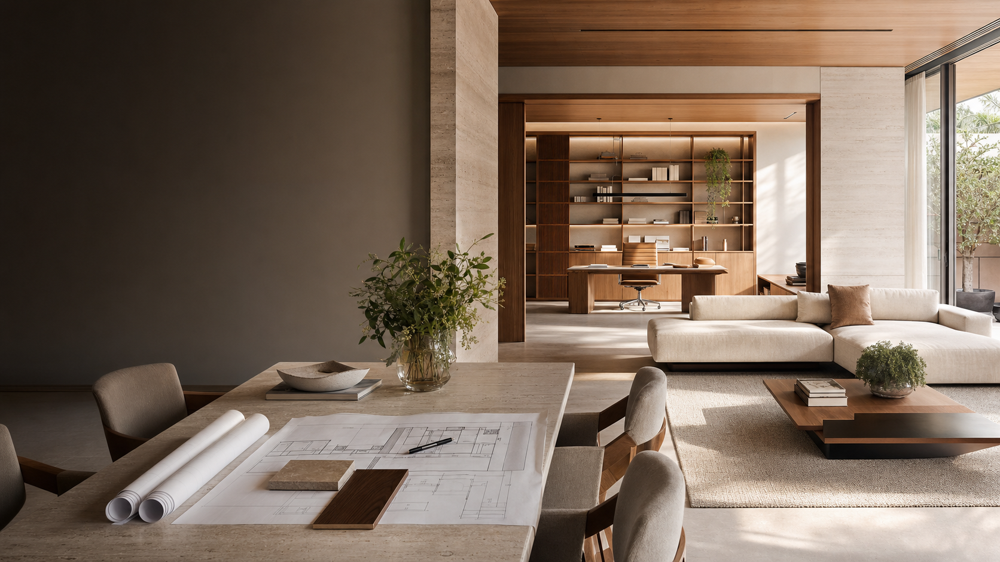

Projetos e interiores
Conceito, layout, detalhamento, materiais, iluminação e ambientes planejados.

Arquitetura & Interiores
Criamos espaços residenciais e comerciais com leitura arquitetônica, escolhas precisas e acompanhamento para transformar intenção em resultado.
Da primeira leitura do espaço à entrega, cada decisão tem propósito.
Home Project
Não entregamos apenas uma imagem bonita. Entendemos o espaço, estruturamos escolhas e acompanhamos as etapas para que o resultado final seja funcional, viável e coerente com a identidade de quem vai viver ou trabalhar ali.
Veja onde podemos ajudar ↓Projetos integrados
Entramos onde existe potencial e transformamos intenção em projeto executável.
Conceito, layout, detalhamento, materiais, iluminação e ambientes planejados.
Escopo claro, planejamento de etapas, orçamento e acompanhamento das decisões.
Direcionamento objetivo para adequar, recuperar e valorizar espaços existentes.
Coordenação de decisões, fornecedores, cronogramas e informações do projeto.
Atuação
Do primeiro estudo ao acompanhamento da execução, o escopo é estruturado conforme objetivo, contexto e nível de detalhe necessário.
Layout, conceito visual, materiais, iluminação e composição dos ambientes.
Levantamento, solução funcional, apoio na escolha de acabamentos e integração com o ambiente.
Organização de etapas, decisões, fornecedores, cronograma e acompanhamento técnico.
Direcionamento pontual para resolver dúvidas, adequar espaços ou planejar próximos passos.
Portfólio
Projetos residenciais e comerciais pensados para unir estética, função e execução com cuidado em cada detalhe.

Planejamento de layout, materiais, fluxo de uso e acabamento para negócios que precisam unir imagem, função e execução.

Organização de etapas, fornecedores, decisões e orçamento para reduzir improvisos durante reformas e execuções.
Composição de ambientes, marcenaria, iluminação e soluções sob medida para transformar a rotina dentro do imóvel.
Quer transformar um ambiente residencial ou comercial?
Iniciar diagnóstico
Nosso método
Entendemos uso, contexto, prioridades, limites e potencial do ambiente.
Transformamos a leitura inicial em uma solução visual e técnica.
Organizamos recursos, etapas, parceiros e decisões com precisão.
Acompanhamos o caminho para preservar a intenção do projeto.
Onde intenção encontra forma
“Um bom espaço não acontece por acaso. Ele nasce de escolhas precisas, feitas na ordem certa.”
Processo com critério
Atendimento em Divisa Alegre e região. Projetos e consultorias remotas podem ser avaliados conforme escopo e necessidade.
Entendemos o espaço, a rotina, as prioridades e o resultado esperado.
Cada proposta considera contexto, viabilidade, etapas e nível de acompanhamento.
As informações iniciais são organizadas para orientar a equipe desde o primeiro contato.
Perguntas frequentes
Algumas respostas rápidas para iniciar o processo com clareza.
Projetos, interiores, ambientes planejados, planejamento de obras e reformas, melhorias, reparos e apoio na administração das etapas e fornecedores.
Sim. O diagnóstico inicial existe justamente para organizar a necessidade, identificar prioridades e definir o melhor caminho.
O primeiro contato organiza as informações essenciais. Depois, a equipe avalia o caso e orienta sobre reunião, visita, levantamento ou proposta.
Sim. As soluções são estruturadas conforme o uso do imóvel, o objetivo do cliente e a complexidade necessária.
Pré-briefing
Preencha o formulário e ele monta uma mensagem para o WhatsApp da Home Project. Nenhum dado fica salvo no site; tudo é enviado somente quando você confirma a conversa.
Primeiro contato
O primeiro contato organiza as informações iniciais e prepara o atendimento da equipe Home Project com mais precisão.